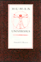
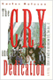
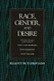

Browse
other Author lists:
A B C
D E F
G H I
J K L
M N O
P Q R
S T U
V W X
Y Z |
 |
Public
Art in Philadelphia
Bach,
Penny Balkin
288 pp • 8x10 • Fall 1992
cloth 978-0-87722-822-6 |
 |
Power
and Empowerment
A Radical Theory of Participatory Democracy
Bachrach,
Peter and Aryeh Botwinick
216 pp • 5.5x8.25 • Spring 1992
paper 978-0-87722-939-1
cloth 978-0-87722-930-8 |
 |
The
Beat of My Drum
An Autobiography
Olatunji,
Babatunde with Robert Atkinson and Akinsola Akiwowo, foreword
by Joan Baez, introduction by Eric Charry
272 pp • 6x9 • Spring 2005
paper 978-1-59213-354-3
cloth 978-1-59213-353-6
|
 |
Habitat
for Humanity®
Building Private Homes, Building Public Religion
Baggett,
Jerome P.
360 pp • 6x9 • Fall 2000
paper 978-1-56639-803-9
cloth 978-1-56639-802-2
|
 |
Between
the Lines
South Asians and Postcoloniality
edited
by Bahri, Deepika and Mary Vasudeva
384 pp • 6x9 • Fall 1996
paper 978-1-56639-468-0
cloth 978-1-56639-467-3
|
 |
Free
Trade and Uneven Development
The North American Apparel Industry after NAFTA
edited
by Gereffi, Gary, David Spener and Jennifer Bair
368 pp • 7x10 • Fall 2002
paper 978-1-56639-968-5
cloth 978-1-56639-967-8
|
 |
Toward
Solomon's Mountain
The Experience of Disability in Poetry
edited
by Baird, Joseph L. and Deborah S. Workman
160 pp • Spring 1986
cloth 978-0-87722-416-7 |
|
Understanding
Mainland Puerto Rican Poverty
Baker,
Susan S.
256 pp • 6x9 • Fall 2002
paper 978-1-56639-970-8
cloth 978-1-56639-969-2
|
 |
The
Critical Study of Work
Labor, Technology, and Global Production
edited
by Baldoz, Rick, Charles Koeber and Philip Kraft
296 pp • 7x10 • Spring 2001
paper 978-1-56639-798-8
cloth 978-1-56639-797-1
|
|
The Borders of Justice
edited by Balibar, Étienne, Sandro Mezzadra and Ranabir Samaddar
224 pp • 6x9 • Fall 2011
paper 978-1-4399-0686-6
cloth 978-1-4399-0685-9
|
 |
Technological
Visions
The Hopes and Fears that Shape New Technologies
edited
by Sturken, Marita, Douglas Thomas and Sandra Ball-Rokeach
384 pp • 6x9 • Fall 2003
paper 978-1-59213-227-0
cloth 978-1-59213-226-3
|
 |
Social
Darwinism
Science and Myth in Anglo-American Social Thought
Bannister,
Robert C.
292 pp • Fall 1988
paper 978-0-87722-566-9
cloth 978-0-87722-155-5
|
 |
Myths
about the Powerless
Contesting Social Inequalities
edited
by Lykes, M. Brinton, Ali Banuazizi, Ramsay Liem and Michael
Morris, foreword by George W. Albee
416 pp • 6x9 • Spring 1996
paper 978-1-56639-422-2
cloth 978-1-56639-421-5
|

|
Creating a Buddhist Community
A Thai Temple in Silicon Valley
Bao, Jiemin
204 pp • 5.5x8.25 • Spring 2015
paper 978-1-4399-0955-3
cloth 978-1-4399-0954-6 |

|
Criminology and Public Policy
Putting Theory to Work
Barlow, Hugh and Scott Decker
306 pp • 6x9 • Fall 2009
paper 978-1-4399-0007-9
cloth 978-1-4399-0006-2
|
 |
Going
by the Book
The Problem of Regulatory Unreasonableness
Bardach,
Eugene and Robert A. Kagan
350 pp • Spring 1982
paper 978-0-87722-252-1
cloth 978-0-87722-251-4 |
 |
At
a Loss for Words
How America Is Failing Our Children and What We Can Do about It
Bardige,
Betty, foreword by T. Berry Brazelton, M.D.
272 pp • 6x9 • Spring 2005
paper 978-1-59213-393-2
cloth 978-1-59213-392-5
|
 |
The
Fibromyalgia Story
Medical Authority and Women's Worlds of Pain
Barker,
Kristin K.
264 pp • 6x9 • Spring 2005
paper 978-1-59213-161-7
cloth 978-1-59213-160-0
|
 |
'Looking
Up at Down'
The Emergence of Blues Culture
Barlow,
William
464 pp • Spring 1989
paper 978-0-87722-722-9
cloth 978-0-87722-583-6 |
 |
Voice
Over
The Making of Black Radio
Barlow,
William
334 pp • 6x9 • Fall 1998
paper 978-1-56639-667-7
cloth 978-1-56639-666-0
|
 |
Conceiving Masculinity
Male Infertility, Medicine, and Identity
Barnes, Liberty Walther
228 pp • 5.5x8.25 • Spring 2014
paper 978-1-43991-042-9
cloth 978-1-43991-041-2 |
|
The
Psychodynamics of Organizations
edited
by Hirschhorn, Larry and Carole K. Barnett
288 pp • 6x9 • Spring 1993
paper 978-1-56639-021-7
cloth 978-1-56639-020-0 |
 |
Psychiatry and Behavioral Science
An Introduction and Study Guide for Medical Students
edited by Baron, MSEd, DO, David and Ellen Sholevar, MD
320 pp • 7x10 • Spring 2008
paper 978-1-59213-531-8
|
 |
The African Transformation of Western Medicine and the Dynamics of Global Cultural Exchange
Baronov, David
264 pp • 6x9• Fall 2008
paper 978-1-59213-916-3
cloth 978-1-59213-915-6
|
|
Obligations
to Future Generations
edited
by Sikora, R. I. and Brian Barry
200 pp • Fall 1978
paper 978-0-87722-128-9
cloth 978-0-87722-132-6 |
 |
Philadelphia
Neighborhoods, Division, and Conflict in a Post-Industrial City
Adams,
Carolyn, David Bartelt, David Elesh, Ira Goldstein, Nancy Kleniewski
and William Yancey
224 pp • 6x9 • Fall 1991
paper 978-1-56639-078-1
cloth 978-0-87722-842-4
|
 |
Restructuring the Philadelphia Region
Metropolitan Divisions and Inequality
Adams, Carolyn, David W. Bartelt, David Elesh and Ira Goldstein with Michelle Schmitt and Joshua Freely
248 pp • 6x9 • Fall 2008
paper 978-1-59213-897-5
cloth 978-1-59213-896-8
|
 |
Putting
on Appearances
Gender and Advertising
Barthel,
Diane
232 pp • Fall 1989
paper 978-0-87722-661-1
cloth 978-0-87722-528-7
|
|
Atlanta Unbound
Enabling Sprawl through Policy and Planning
Basmajian, Carlton Wade
288 pp • 7x10 • Fall 2013
paper 978-1-4399-0940-9
cloth 978-1-4399-0939-3 |
|
Choosing
Equality
The Case for Democratic Schooling
Bastian,
Ann, Norm Fruchter, Marilyn Gittell, Kenneth Haskins and Colin
Greer, foreword by James P. Comer
222 pp • 5.5x8.25 • Fall 1986
paper 978-0-87722-454-9
cloth 978-0-87722-438-9 |

|
The Hirschfeld Archives
Violence, Death, and Modern Queer Culture
Bauer, Heike
240 pp • 6x9 • Spring 2017
paper 978-1-4399-1433-5
cloth 978-1-4399-1432-8
|
 |
Sexology and Translation
Cultural and Scientific Encounters across the Modern World
edited by Bauer, Heike
284 pp • 6x9 • Fall 2015
paper 978-1-4399-1249-2
cloth 978-1-4399-1248-5 |

|
Behind the Mask of the Strong Black Woman
Voice and the Embodiment of a Costly Performance
Beauboeuf-Lafontant, Tamara
194 pp • 5.5x8.25 • Fall 2009
paper 978-1-59213-668-1
cloth 978-1-59213-667-4
|
|
The
Health of the Republic
Epidemics, Medicine, and Moralism as Challenges to Democracy
Beauchamp,
Dan E.
312 pp • Fall 1988
paper 978-0-87722-729-8
cloth 978-0-87722-558-4 |
 |
Health
Care Reform and the Battle for the Body Politic
Beauchamp,
Dan E.
224 pp • 5.5x8.25 • Spring 1996
paper 978-1-56639-414-7
cloth 978-1-56639-413-0
|
 |
Building
the Beloved Community
Maurice McCrackin's Life for Peace and Civil Rights
Bechtel,
Judith A. and Robert M. Coughlin, foreword by Daniel Berrigan
288 pp • Spring 1991
cloth 978-0-87722-783-0 |
 |
Local Protest, Global Movements
Capital, Community, and State in San Francisco
Beitel, Karl
230 pp • 6x9 • Spring 2013
paper 978-1-4399-0995-9
cloth 978-1-4399-0994-2
|
|
If
You Tame Me
Understanding Our Connection with Animals
Irvine,
Leslie, foreword by Marc Bekoff
240 pp • 6x9 • Spring 2004
paper 978-1-59213-241-6
cloth 978-1-59213-240-9
|
 |
Animal
Passions and Beastly Virtues
Reflections on Redecorating Nature
Bekoff,
Marc, foreword by Jane Goodall 320 pp •
6x9 • Fall 2005
paper 978-1-59213-348-2
cloth 978-1-59213-347-5
|
 |
Animals at Play
Rules of the Game
Bekoff, Marc, illustrations by Michael J. DiMotta
32 pp • 10x7• Fall 2008
cloth 978-1-59213-551-6 |
|
DES Daughters
Embodied Knowledge and the Transformation of Women's Health Politics
Bell, Susan
232 pp • 6x9 • Fall 2009
paper 978-1-59213-919-4
cloth 978-1-59213-918-7
|
 |
We
Make the Road by Walking
Conversations on Education and Social Change
Horton,
Myles and Paulo Freire, edited by Brenda Bell, John Gaventa
and John Peters
296 pp • 5.5x8.25 • Fall 1990
paper 978-0-87722-775-5
cloth 978-0-87722-771-7
|
 |
Reconstructing
Prehistory
Scientific Method in Archaeology
Bell,
James A.
368 pp • 6x9 • Spring 1994
paper 978-1-56639-160-3
cloth 978-1-56639-159-7
|
 |
The Strange Music of Social Life
A Dialogue on Dialogic Sociology
Bell, Michael Mayerfeld, edited by Ann Goetting 248 pp • 5.5x8.25 • Spring 2011
paper 978-1-4399-0724-5
cloth 978-1-4399-0723-8
|
|
Justifying
Law
The Debate over Foundations, Goals, and Methods
Belliotti,
Raymond A.
312 pp • 6x9 • Spring 1992
paper 978-1-56639-203-7
cloth 978-0-87722-818-9 |
|
Music, Style, and Aging
Growing Old Disgracefully?
Bennett, Andy
226 pp • 5.5x8.25 • Fall 2012
paper 978-1-4399-0808-2
cloth 978-1-4399-0807-5 |
 |
Chicago
Race, Class, and the Response to Urban Decline
Squires,
Gregory D., Larry Bennett, Kathleen McCourt and Philip Nyden
248 pp • Fall 1987
paper 978-0-87722-617-8
cloth 978-0-87722-487-7 |

|
The
New Chicago
A Social and Cultural Analysis
edited by Bennett, Larry, John P. Koval, Michael I. J. Bennett, Fassil Demissie, Roberta Garner and Kiljoong Kim
384 pp • 7x10 • Fall 2006
paper 978-1-59213-088-7
cloth 978-1-59213-087-0
|

|
Dewey's Dream
Universities and Democracies in an Age of Education Reform
Benson, Lee, Ira Harkavy, and Puckett, John
168 pp • 5.5x8.25 • Spring 2007
paper 978-1-59213-592-9
cloth 978-1-59213-591-2
|

|
Knowledge for Social Change
Bacon, Dewey, and the Revolutionary Transformation of Research Universities in the Twenty-First Century
Benson, Lee, Ira Harkavy, John Puckett, Matthew Hartley, Rita A. Hodges, Francis E. Johnston, and Joann Weeks
206 pp • 6x9 • Spring 2017
paper 978-1-4399-1519-6
cloth 978-1-4399-1518-9
|
 |
Presenting
the Past
Essays on History and the Public
edited
by Benson, Susan Porter, Stephen Brier and Roy Rosenzweig
400 pp • 6x9 • Spring 1986
paper 978-0-87722-413-6
cloth 978-0-87722-406-8
|
 |
Alphabet Movers
Benzwie, Teresa, Illustrated by Robert Bender
32 pp • 8.5x11 • Spring 2011
cloth 978-1-930798-08-3 |
 |
Numbers on the Move
1 2 3 Dance and Count with Me
Benzwie, Teresa, Illustrated by Mark Weber
32 pp • 11x8.5 • Spring 2011
cloth 978-1-4399-0342-1 |
 |
The
National Question
Nationalism, Ethnic Conflict, and Self-Determination in the Twentieth
Century
edited
by Berberoglu, Berch
344 pp • 6x9 • Fall 1995
paper 978-1-56639-343-0
cloth 978-1-56639-342-3
|
 |
The Art of Play
Recess and the Practice of Invention
Beresin, Anna R.
202 pp • 6x9 • Fall 2013
paper 978-1-4399-1094-8
cloth 978-1-4399-1093-1
|
 |
The
Gold Standard
The Challenge of Evidence-Based Medicine and Standardization in
Health Care
Timmermans,
Stefan and Marc Berg
280 pp • 6x9 • Spring 2003
paper 978-1-59213-188-4
cloth 978-1-59213-187-7
|
 |
Values
and Value Theory in Twentieth-Century America
Essays in Honor of Elizabeth Flower
edited
by Murphy, Murray G. and Ivar Berg
308 pp • Fall 1988
cloth 978-0-87722-557-7 |
 |
Bass
Line
The Stories and Photographs of Milt Hinton
Hinton,
Milt and David G. Berger
328 pp • 10.5x9.5 • Fall 1988
paper 978-0-87722-681-9
cloth 978-0-87722-518-8
|
 |
Softly, with Feeling
Joe Wilder and the Breaking of Barriers in American Music
Berger, Edward
400 pp • 6x9 •
Spring 2014
cloth 978-1-4399-1127-3 |
 |
Wheelchair Warrior
Gangs, Disability, and Basketball
Juette, Melvin and Ronald J. Berger
192 pp • 5.5x8.25 • Spring 2008
paper 978-1-59213-475-5
cloth 978-1-59213-474-8
|
|
God
in the Street
New York Writing from The Penny Press to Melville
Bergmann,
Hans
272 pp • 6x9 • Fall 1995
paper 978-1-56639-358-4
cloth 978-1-56639-357-7
|
 |
Aggression
Its Causes, Consequences, and Control
Berkowitz,
Leonard
496 pp • 6.4x9.3 • Spring 1993
cloth 978-1-56639-033-0
|
|
Measuring
the Efficiency of Public Programs
Costs and Benefits in Vocational Rehabilitation
edited
by Berkowitz, Monroe
256 pp • Spring 1988
cloth 978-0-87722-527-0 |
 |
Taking
It Personally
Racism in the Classroom from Kindergarten to College
Berlak,
Ann and Sekani Moyenda
216 pp • 6x9 • Spring 2001
paper 978-1-56639-876-3
cloth 978-1-56639-875-6
|
 |
Aesthetics
of Environment
Berleant,
Arnold
256 pp • 6x9 • Fall 1992
paper 978-1-56639-334-8
cloth 978-0-87722-993-3
|
 |
Art
and Engagement
Berleant,
Arnold
288 pp • 6x9 • Spring 1991
paper 978-1-56639-084-2
cloth 978-0-87722-797-7 |
 |
Speaking of Race and Class
The Student Experience at an Elite College
Aries, Elizabeth, with Richard Berman 238 pp • 6x9 • Fall
2012
paper 978-1-4399-0967-6
cloth 978-1-4399-0966-9
|
 |
Suffering and Sunset
World War I in the Art and Life of Horace Pippin
Bernier, Celeste-Marie
New in Paperback!
552 pp • 6.125x9.25 • Fall 2017
paper 978-1-4399-1274-4
cloth 978-1-4399-1273-7 |

|
Closure
The Rush to End Grief and What It Costs Us
Berns, Nancy
228 pp • 6x9 • Fall 2011
paper 978-1-4399-0577-7
cloth 978-1-4399-0576-0
|
 |
Managing
Contracted Services in the Nonprofit Agency
Administrative, Ethical, and Political Issues
Bernstein,
Susan R., foreword by Roger A. Lohmann
230 pp • 6x9 • Spring 1991
paper 978-0-87722-809-7
cloth 978-0-87722-808-0
|
|
Building
the Beloved Community
Maurice McCrackin's Life for Peace and Civil Rights
Bechtel,
Judith A. and Robert M. Coughlin, foreword by Daniel Berrigan
288 pp • Spring 1991
cloth 978-0-87722-783-0 |
 |
Liberation
Theology
Essential Facts about the Revolutionary Religious Movement in
Latin America and Beyond
Berryman,
Phillip
240 pp • 5x8 • Spring 1987
cloth 978-0-87722-479-2 |
|
My
Diary North and South
William Howard Russell
edited
by Berwanger, Eugene H.
384 pp • Fall 1987
cloth 978-0-87722-522-5 |

|
Consuming Work
Youth Labor in America
Besen-Cassino, Yasemin
202 pp • 6x9 • Fall 2013
paper 978-1-4399-0949-2
cloth 978-1-4399-0948-5 |
|
The Cost of Being a Girl
Working Teens and the Origins of the Gender Wage Gap
Besen-Cassino, Yasemin
238 pp • 6x9 • Fall 2017
paper 978-1-4399-1349-9
cloth 978-1-4399-1348-2 |
|
Reducing
Workweeks to Prevent Layoffs
The Economic and Social Impacts of Unemployment Insurance-Supported
Work Sharing
Best,
Fred, foreword by Herbert J. Gans
228 pp • Fall 1987
cloth 978-0-87722-506-5 |
 |
Promiseland
A Century of Life in a Negro Community
Bethel,
Elizabeth Rauh
329 pp • Spring 1981
paper 978-0-87722-275-0
cloth 978-0-87722-211-8 |
 |
The
Roots of Community Organizing, 1917-1939
Betten,
Neil and Michael J. Austin, contributions by Robert Fisher,
William E. Hershey, Raymond A. Hohl and Marc Lee Raphael
230 pp • 5.5x8.25 • Fall 1989
cloth 978-0-87722-662-8
|

|
St. Peter's Church
Faith in Action for 250 Years
Biddle, Cordelia Frances, Elizabeth S. Browne, Alan J. Heavens and Charles P. Peitz
264 pp • 8x10 • Fall 2011
cloth 978-1-43990-795-5 |
|
Tasting Freedom
Octavius Catto and the Battle for Equality in Civil War America
Biddle, Daniel R. and Murray Dubin
New in Paperback!
632 pp • 6x9 • Fall 2017
paper 978-1-4399-1349-9
cloth 978-1-59213-465-6
|
 |
Child,
Parent, and State
Law and Policy Reader
edited
by Humm, Randall S., Beate Anne Ort, Martin Mazen Anbari, Wendy
S. Lader and William Scott Biel
712 pp • 7x10 • Spring 1994
paper 978-1-56639-134-4
cloth 978-1-56639-133-7
|
 |
Soap
Fans
Pursuing Pleasure and Making Meaning in Everyday Life
Harrington,
C. Lee and Denise D. Bielby
240 pp • 6x9 • Fall 1995
paper 978-1-56639-330-0
cloth 978-1-56639-329-4
|
 |
Pathways
from Heroin Addiction
Recovery Without Treatment
Biernacki,
Patrick
268 pp • Spring 1986
cloth 978-0-87722-410-5 |
 |
American
Conversations
Puerto Ricans, White Ethnics, and Multicultural Education
Bigler,
Ellen
296 pp • 5.5x8.25 • Spring 1999
paper 978-1-56639-688-2
cloth 978-1-56639-687-5
|
 |
Earth
Muse
Feminism, Nature, and Art
Bigwood,
Carol
320 pp • 6x9 • Fall 1992
paper 978-0-87722-987-2
cloth 978-0-87722-986-5 |
 |
Schooling
Without Labels
Parents, Educators, and Inclusive Education
Biklen,
Douglas
210 pp • Fall 1991
paper 978-0-87722-876-9
cloth 978-0-87722-875-2 |
 |
Caribbean
Currents
Caribbean Music from Rumba to Reggae
Manuel,
Peter with Kenneth Bilby and Michael Largey
336 pp • 6x9 • Spring 2006
paper 978-1-56639-339-3
cloth 978-1-56639-338-6
|
 |
Family
and Gender Among American Muslims
Issues Facing Middle Eastern Immigrants And Their Decendants
edited
by Aswad, Barbara C. and Barbara Bilgé
344 pp • 6x9 • Spring 1996
paper 978-1-56639-443-7
cloth 978-1-56639-442-0
|
|
The
Phillies Encyclopedia
Westcott,
Rich and Frank Bilovsky, foreword by Harry Kalas
696 pp • 9x12 • Spring 2004
cloth 978-1-59213-015-3
|
 |
Law
and Order and School
Daily Life in an Educational Program for Juvenile Delinquents
Birnbaum,
Shira
208 pp • 5.5x8.25 • Spring 2001
paper 978-1-56639-870-1
cloth 978-1-56639-869-5
|

|
Tyranny of the Minority
The Subconstituency Politics Theory of Representation
Bishin, Benjamin
New in Paperback!
216 pp • 6x9 • Spring 2010
paper 978-1-59213-659-9
cloth 978-1-59213-658-2
|
 |
The Philadelphia Reader
edited
by Huber, Robert, and Benjamin Wallace, foreword by Buzz Bissinger
296
pp • 6x9 • Spring 2006
paper 978-1-59213-461-8
cloth 978-1-59213-460-1
|
|
The
Nazi Census
Identification and Control in the Third Reich
Aly,
Götz and Karl Heinz Roth, foreword by Edwin Black, translated
by Assenka Oksiloff
192 pp • 5.5x8.25 • Spring 2004
paper 978-1-59213-259-1
cloth 978-1-59213-199-0
|
|
Modern
American Queer History
edited
by Black, Allida M.
312 pp • 7x10 • Spring 2001
paper 978-1-56639-872-5
cloth 978-1-56639-871-8
|

|
Reading Up
Middle-Class Readers and the Culture of Success in the Early Twentieth-Century United States
Blair, Amy L.
264 pp • 6x9 • Fall 2011
paper 978-1-4399-0668-2
cloth 978-1-4399-0667-5
|

|
Separate Societies
Poverty and Inequality in U.S. Cities
Second Edition
Goldsmith, William W. and Edward J. Blakely
268 pp • 6x9 • Spring 2010
paper 978-1-43990-292-9
cloth 978-1-43990-291-2
|
 |
Gay
and Lesbian Politics
Sexuality and the Emergence of a New Ethic
Blasius,
Mark
240 pp • 5.5x8.25 • Fall 1994
paper 978-1-56639-174-0
cloth 978-1-56639-173-3 |
 |
Polka
Happiness
Keil,
Charles, Angeliki V. Keil and Dick Blau
288 pp • 8x10 • Fall 1992
paper 978-1-56639-462-8
cloth 978-0-87722-819-6 |
 |
Still
the Big News
Racial Oppression in America
Blauner,
Bob
288 pp • 6x9 • Spring 2001
paper 978-1-56639-874-9
cloth 978-1-56639-873-2
|
 |
Revising
State Theory
Essays in Politics and Postindustrialism
Block,
Fred
256 pp • Fall 1987
paper 978-0-87722-524-9
cloth 978-0-87722-465-5
|
|
Catalog
of the Charles L. Blockson Afro-American Collection of the Temple
University Libraries
Blockson,
Charles L., introduction by Dorothy Porter Wesley
820 pp • Fall 1990
cloth 978-0-87722-749-6 |
 |
Baseball
Managers
Stats, Stories, and Strategies
Bloss,
Bob
400 pp • 6x9.2 • Spring 1999
cloth 978-1-56639-661-5
|
|
Rookies
of the Year
Bloss,
Bob
224 pp • 6x9 • Spring 2005
cloth 978-1-59213-164-8
|
 |
The
Paradox of Natural Mothering
Bobel,
Chris
240 pp • 5.5x8.25 • Fall 2001
paper 978-1-56639-907-4
cloth 978-1-56639-906-7
|
|
Social
Movements and Political Power
Emerging Forms of Radicalism in the West
Boggs,
Carl
304 pp • 6x9 • Fall 1986
paper 978-0-87722-622-2
cloth 978-0-87722-447-1
|
 |
Global
Production
The Apparel Industry in the Pacific Rim
edited
by Bonacich, Edna, Lucie Cheng, Norma Chinchilla, Nora Hamilton
and Paul Ong
400 pp • 6x9 • Spring 1994
paper 978-1-56639-169-6
cloth 978-1-56639-168-9
|
 |
The
New Asian Immigration in Los Angeles and Global Restructuring
edited
by Ong, Paul, Edna Bonacich and Lucie Cheng
344 pp • 6x9 • Fall 1994
paper 978-1-56639-218-1
cloth 978-1-56639-217-4 |
 |
Borderless
Borders
U.S. Latinos, Latin Americans, and the Paradox of Interdependence
edited
by Bonilla, Frank, Edwin Meléndez, Rebecca Morales and María
de los Angeles Torres
336 pp • 6x9 • Spring 1998
paper 978-1-56639-620-2
cloth 978-1-56639-619-6
|
 |
Contemporary
Asian American Communities
Intersections and Divergences
edited
by Võ, Linda Trinh and Rick Bonus
264 pp • 7x10 • Spring 2002
paper 978-1-56639-938-8
cloth 978-1-56639-937-1
|
 |
Locating
Filipino Americans
Ethnicity and the Cultural Politics of Space
Bonus,
Rick
248 pp • 6x9 • Spring 2000
paper 978-1-56639-779-7
cloth 978-1-56639-778-0
|
 |
Women
and the Politics of Empowerment
edited
by Bookman, Ann and Sandra Morgen
352 pp • Fall 1987
paper 978-0-87722-525-6
cloth 978-0-87722-504-1
|
 |
City and Environment
Boone,
Christopher G. and Ali Modarres 240 pp •
6x9 • Spring 2006
paper 978-1-59213-284-3
cloth 978-1-59213-283-6
|
 |
In
Search of Parenthood
Coping with Infertility and High-Tech Conception
Lasker,
Judith N. and Susan Borg
240 pp • 6x9 • Fall 1994
paper 978-1-56639-259-4
cloth 978-1-56639-258-7 |

|
Surviving
Mexico's Dirty War
A Political Prisoner's Memoir
Bornemann, Alberto Ulloa , edited by Arthur Schmidt and Aurora
Camacho de Schmidt
240 pp • 6x9 • Fall 2006
paper 978-1-59213-423-6
cloth 978-1-59213-422-9
|
|
Cleavage Politics and the Populist Right
The New Cultural Conflict in Western Europe
Bornschier, Simon
260 pp • 6x9 • Spring 2010
cloth 978-1-4399-0192-2
|
 |
The Gendered Executive
A Comparative Analysis of Presidents, Prime Ministers, and Chief Executives
edited by Martin, Janet M., and MaryAnne Borrelli
296 pp • 6x9 • Fall 2016
paper 978-1-4399-1364-2
cloth 978-1-4399-1363-5
|
 |
My
Mother's Hip
Lessons from the World of Eldercare
Margolies,
Luisa, foreword by Walter M. Bortz II, M.D.
360 pp • 6x9 • Fall 2003
paper 978-1-59213-238-6
cloth 978-1-59213-237-9
|
 |
Suspect Citizens
Women, Virtue, and Vice in Backlash Politics
Boryczka, Jocelyn M.
216 pp • 5.5x8.25 • Fall 2012
paper 978-1-4399-0894-5
cloth 978-1-4399-0893-8
|
|
Women
in the Latin American Development Process
edited
by Bose, Christine E. and Edna Acosta-Belén
304 pp • 6x9 • Spring 1995
paper 978-1-56639-293-8
cloth 978-1-56639-292-1
|
 |
Women
in 1900
Gateway to the Political Economy of the 20th Century
Bose,
Christine E.
272 pp • 5x8 • Fall 2000
paper 978-1-56639-838-1
cloth 978-1-56639-837-4
|
 |
Skepticism
and Political Participation
Botwinick,
Aryeh
256 pp • Fall 1989
cloth 978-0-87722-657-4 |
|
Power
and Empowerment
A Radical Theory of Participatory Democracy
Bachrach,
Peter and Aryeh Botwinick
216 pp • 5.5x8.25 • Spring 1992
paper 978-0-87722-939-1
cloth 978-0-87722-930-8 |
 |
Postmodernism
and Democratic Theory
Botwinick,
Aryeh
288 pp • 6x9 • Spring 1993
cloth 978-0-87722-997-1 |
|
Women
Living Change
Bourque,
Susan C. and Donna Robinson Divine
288 pp • Spring 1985
cloth 978-0-87722-369-6 |
 |
A
Case About Amy
Smith,
R. C., foreword by Frank G. Bowe
344 pp • 6x9 • Spring 1996
paper 978-1-56639-412-3
cloth 978-1-56639-411-6
|
 |
Ethical
Issues in Government
edited
by Bowie, Norman E.
325 pp • Spring 1981
cloth 978-0-87722-165-4 |
 |
Animal
Sacrifices
Religious Perspectives on the Use of Animals in Science
edited
by Regan, Tom, introduction by John Bowker
288 pp • Spring 1986
paper 978-0-87722-511-9
cloth 978-0-87722-411-2 |
 |
Harvey
and Jessie
A Couple of Radicals
O'Connor,
Jessie Lloyd, Harvey O'Connor and Susan M. Bowler
278 pp • Spring 1988
paper 978-0-87722-659-8
cloth 978-0-87722-519-5 |
 |
Creating
a New World Economy
Forces of Change and Plans for Action
edited
by Epstein, Gerald, Julie Graham and Jessica Nembhard, foreword
by Samuel Bowles
496 pp • 6x9 • Fall 1993
paper 978-1-56639-054-5
cloth 978-1-56639-053-8 |
 |
How
I Got Over
Clara Ward and the World-Famous Ward Singers
Ward-Royster,
Willa, as told by Toni Rose, foreword by Horace Clarence Boyer
263 pp • 6x9 • Spring 2000
paper 978-1-56639-490-1
cloth 978-1-56639-489-5
|
 |
Backyard
Revolution
Understanding the New Citizen Movement
Boyte,
Harry C.
288 pp • Fall 1980
paper 978-0-87722-229-3
cloth 978-0-87722-192-0 |
 |
The
New Populism
The Politics of Empowerment
edited
by Boyte, Harry C. and Frank Riessman
336 pp • Fall 1986
paper 978-0-87722-449-5
cloth 978-0-87722-429-7 |
 |
Building
America
The Democratic Promise of Public Work
Boyte,
Harry C. and Nancy N. Kari
272 pp • 5.5x8.25 • Spring 1996
paper 978-1-56639-458-1
cloth 978-1-56639-457-4 |
 |
A
New Housing Policy for America
Recapturing the American Dream
Schwartz,
David C., Richard C. Ferlauto and Daniel N. Hoffman, foreword
by Bill Bradley
288 pp • Spring 1988
paper 978-0-87722-568-3
cloth 978-0-87722-567-6 |
 |
Justice,
Law, and Violence
edited
by Brady, James B. and Newton Garver
368 pp • Fall 1991
cloth 978-0-87722-843-1 |

|
Phantom Skies and Shifting Ground
Landscape, Culture, and Rephotography in Eadweard Muybridge's Lost Illustrations of Central America
Wolfe, Byron, and Scott Brady
228 pp • 12.25x10.75 • Spring 2017
cloth 978-1-942185-14-7 |
 |
Beyond
Employment
Time, Work, and the Informal Economy
Offe,
Claus and Rolf G. Heinze, translated by Alan Braley
248 pp • 6x9 • Spring 1992
cloth 978-0-87722-951-3 |
 |
Senior Power or Senior Peril
Aged Communities and American Society in the Twenty-First Century
Bramlett, Brittany H. 168
pp • 5.5x8.250 • Fall 2014
paper 978-1-43991-134-1
cloth 978-1-43991-133-4 |
 |
Undaunted
Psychologist
edited
by Brannigan, Gary G. and Matthew R. Merrens
320 pp • 6.5x9.25 • Fall 1992
cloth 978-1-56639-015-6 |
 |
Inheritance
Law and the Evolving Family
Brashier,
Ralph C.
272 pp • 6x9 • Fall 2003
paper 978-1-59213-222-5
cloth 978-1-59213-221-8
|
 |
A
Right to Housing
Foundation for a New Social Agenda
edited
by Bratt, Rachel G., Michael E. Stone and Chester Hartman 448
pp • 7x10 • Fall 2005
paper 978-1-59213-432-8
cloth 978-1-59213-431-1
|
 |
Critical
Perspectives on Housing
edited
by Bratt, Rachel G., Chester Hartman and Ann Meyerson
600 pp • Fall 1985
paper 978-0-87722-396-2
cloth 978-0-87722-395-5 |
|
Rebuilding
a Low-Income Housing Policy
Bratt,
Rachel G.
368 pp • Spring 1989
paper 978-1-56639-263-1
cloth 978-0-87722-595-9 |
|
Black
Women Writing Autobiography
A Tradition Within a Tradition
Braxton,
Joanne M.
240 pp • Fall 1989
paper 978-0-87722-803-5
cloth 978-0-87722-639-0 |
|
At
a Loss for Words
How America Is Failing Our Children and What We Can Do about It
Bardige,
Betty, foreword by T. Berry Brazelton, M.D.
272 pp • 6x9 • Spring 2005
paper 978-1-59213-393-2
cloth 978-1-59213-392-5
|
|
Knowledge
and Values in Social and Educational Research
edited
by Bredo, Eric and Walter Feinberg
paper 978-0-87722-245-3
cloth 978-0-87722-242-2
|
|
Computer
Applications in the Social Sciences
Brent,
Jr., Edward and Ronald E. Anderson
384 pp • 6x9 • Fall 1989
cloth 978-0-87722-666-6
|
 |
Democratic
Theorizing from the Margins
Brettschneider,
Marla
272 pp • 6x9 • Fall 2001
paper 978-1-59213-654-4
cloth 978-1-56639-921-0
|
 |
The
Woman I Was Not Born To Be
A Transsexual Journey
Brevard,
Aleshia
272 pp • 6x9 • Fall 2000
paper 978-1-56639-840-4
cloth 978-1-56639-839-8
|
 |
Reframing Transracial Adoption
Korean Adoptees, White Parents and the Politics of Kinship
Brian, Kristi
230 pp • 6x9 • Spring 2012
paper 978-1-4399-0184-7
cloth 978-1-4399-0183-0 |
 |
Marx,
Reason, and the Art of Freedom
Brien,
Kevin M.
288 pp • Spring 1987
cloth 978-0-87722-466-2 |
|
Presenting
the Past
Essays on History and the Public
edited
by Benson, Susan Porter, Stephen Brier and Roy Rosenzweig
400 pp • 6x9 • Spring 1986
paper 978-0-87722-413-6
cloth 978-0-87722-406-8
|
 |
The
Cult of the Court
Brigham,
John
280 pp • Fall 1987
paper 978-0-87722-828-8
cloth 978-0-87722-486-0
|
 |
Property
and the Politics of Entitlement
Brigham,
John
240 pp • Fall 1990
cloth 978-0-87722-715-1 |
 |
Between
Race and Empire
African-Americans and Cubans before the Cuban Revolution
edited
by Brock, Lisa and Digna Casteñada Fuertes, foreword by Manning
Marable
289 pp • 6x9 • Spring 1998
paper 978-1-56639-587-8
cloth 978-1-56639-586-1
|
 |
Technological
Change and Co-Determination in Sweden
Sandberg,
Åke with Gunnar Broms Arne Grip Lars Sundstrom Jesper Steen
and Peter Ullmark, foreword by Andrew Martin
360 pp • 6x9 • Spring 1992
cloth 978-0-87722-918-6
|
|
Social
Justice and Church Authority
The Public Life of Archbishop Robert E. Lucey
Bronder,
Saul E.
244 pp • Fall 1981
cloth 978-0-87722-239-2 |
 |
Cheaper by the Hour
Temporary Lawyers and the Deprofessionalization of the Law
Brooks, Robert
234 pp • 6x9 • Spring 2011
paper 978-1-4399-0286-8
cloth 978-1-4399-0285-1
|

|
The Production of Living Knowledge
The Crisis of the University and the Transformation of Labor in Europe and North America
Roggero, Gigi, foreword by Enda Brophy
214 pp • 5.5x8.25 • Fall 2011
cloth 978-1-4399-0573-9
|
 |
As French As Everyone Else?
A Survey of French Citizens of Maghrebin, African, and Turkish Origin
Sylvain Brouard and Vincent Tiberj
Foreword by Pascal Perrineau, Translated by Jennifer Fredette
152 pp • 5.5x8.25 • Spring 2011
paper 978-1-4399-0296-7
cloth 978-1-4399-0295-0
|
 |
In
Timber Country
Working People's Stories of Environmental Conflict and Urban Flight
Brown,
Beverly A.
336 pp • 6x9 • Spring 1995
paper 978-1-56639-273-0
cloth 978-1-56639-272-3 |
|  |
Human
Universals
Brown,
Donald E.
220 pp • Spring 1991
cloth 978-0-87722-841-7 |
 |
Boathouse Row
Waves of Change in the Birthplace of American Rowing
Brown, Dotty
288 pp • 10x8 • Fall 2016
cloth 978-1-4399-1282-9 |
 |
Walking in Cities
Quotidian Mobility as Urban Theory, Method, and Practice
edited by Brown, Evrick and Timothy Shortell
292 pp • 6x9 • Fall 2015
paper 978-1-4399-1221-8
cloth 978-1-4399-1220-1 |
 |
History
from South Africa
Alternative Visions and Practices
edited
by Brown, Joshua, Patrick Manning, Karin Shapiro and Jon Wiener
467 pp • Spring 1991
paper 978-0-87722-849-3
cloth 978-0-87722-848-6 |
|
The Concept of the Social in Uniting the Humanities and Social Sciences
Brown, Michael E.
538 pp • 6x9 • Spring 2014
paper 978-1-4399-1016-0
cloth 978-1-43991-015-3
|
 |
The Historiography of Communism
Brown, Michael E.
264 pp • 6x9 • Fall 2008
paper 978-1-59213-922-4
cloth 978-1-59213-921-7
|
 |
Remaking
the Welfare State
Retrenchment and Social Policy in America and Europe
edited
by Brown, Michael K.
320 pp • Spring 1988
cloth 978-0-87722-541-6 |
 |
Catskill
Culture
A Mountain Rat's Memories of the Great Jewish Resort Area
Brown,
Phil
304 pp • 7x10 • Fall 1998
paper 978-1-59213-189-1
cloth 978-1-56639-642-4
|
 |
Family and Work in Everyday Ethnography
edited by Brown, Tamara Mose and Joanna Dreby
228 pp • 5.5x8.25 • Fall 2013
paper 978-1-4399-1076-4
cloth 978-1-4399-1075-7 |
|
St. Peter's Church
Faith in Action for 250 Years
Biddle, Cordelia Frances, Elizabeth S. Browne, Alan J. Heavens and Charles P. Peitz
264 pp • 8x10 • Fall 2011
cloth 978-1-43990-795-5 |
|
Resentment's Virtue
Jean Améry and the Refusal to Forgive
Brudholm, Thomas, foreword by Jeffrie Murphy
256 pp • 6x9 • Fall 2007
paper 978-1-59213-567-7
cloth 978-1-59213-566-0
|
 |
Disability and Passing
Blurring the Lines of Identity
edited by Brune, Jeffrey A. and Daniel J. Wilson
216 pp • 5.5x8.25 • Spring 2013
paper 978-1-4399-0980-5
cloth 978-1-4399-0979-9
|
|
Beyond
the Market and the State
New Directions in Community Development
edited
by Bruyn, Severyn T. and James Meehan
272 pp • Fall 1987
cloth 978-0-87722-484-6 |
 |
Paradise
Remade
The Politics of Culture and History in Hawai'i
Buck,
Elizabeth
288 pp • 5.5x8.25 • Fall 1992
paper 978-1-56639-200-6
cloth 978-0-87722-978-0 |
 |
The Scrapbook in American Life
edited
by Tucker, Susan, Katherine Ott and Patricia P. Buckler 344
pp • 7x10 • Spring 2006
paper 978-1-59213-478-6
cloth 978-1-59213-477-9
|
 |
Closing
the Book on Homework
Enhancing Public Education and Freeing Family Time
Buell,
John
176 pp • 5.5x8.25 • Fall 2003
paper 978-1-59213-218-8
cloth 978-1-59213-217-1
|

|
Against the Deportation Terror
Organizing for Immigrant Rights in the Twentieth Century
Buff, Rachel Ida
282 pp • 6x9 • Fall 2017
paper 978-1-4399-1534-9
cloth 978-1-4399-1533-2 |
 |
The
New Left Revisited
edited
by McMillian, John and Paul Buhle
280 pp • 7x10 • Fall 2002
paper 978-1-56639-976-0
cloth 978-1-56639-975-3
|
 |
History
and the New Left
Madison, Wisconsin, 1950-1970
edited
by Buhle, Paul
457 pp • Fall 1989
paper 978-0-87722-836-3
cloth 978-0-87722-653-6 |
 |
Houston
Growth and Decline in a Sunbelt Boomtown
Shelton,
Beth Anne, Joe R. Feagin, Robert Bullard, Nestor Rodriguez and
Robert D. Thomas
219 pp • Spring 1989
cloth 978-0-87722-607-9 |
 |
On
Becoming Filipino
Selected Writings of Carlos Bulosan
Bulosan,
Carlos, edited by E. San Juan, Jr.
240 pp • 5.5x8.25 • Spring 1995
paper 978-1-56639-310-2
cloth 978-1-56639-309-6 |
|  |
The
Cry and the Dedication
Bulosan,
Carlos, edited by E. San Juan, Jr.
344 pp • 6x9 • Spring 1995
paper 978-1-56639-296-9
cloth 978-1-56639-295-2
|
|
Paths
into American Culture
Burnham,
John C.
Fall 1987
cloth 978-0-87722-505-8 |
|
Invasion of the Mind Snatchers
Television's Conquest of America in the Fifties
Burns, Eric
352 pp • 6x9 • Fall 2010
cloth 978-1-4399-0288-2
|

|
The
Smoke of the Gods
A Social History of Tobacco
Burns, Eric
296 pp • 6x9 • Fall 2006
cloth 978-1-59213-480-9
|
 |
The
Spirits of America
A Social History of Alcohol
Burns,
Eric
344 pp • 6x9 • Fall 2003
paper 978-1-59213-269-0
cloth 978-1-59213-214-0
|
 |
Pastoral
Inventions
Rural Life in Nineteenth-Century American Art and Culture
Burns,
Sarah
392 pp • 9x7.5 • Spring 1989
cloth 978-0-87722-580-5 |
 |
Maya
In Exile
Guatemalans in Florida
Burns,
Allan F., introduction by Jerónimo Camposeco
256 pp • 5.5x8.25 • Spring 1993
paper 978-1-56639-036-1
cloth 978-1-56639-035-4 |
 |
We
Are a People
Narrative and Multiplicity in Constructing Ethnic Identity
edited
by Spickard, Paul and W. Jeffrey Burroughs
304 pp • 7x10 • Fall 1999
paper 978-1-56639-723-0
cloth 978-1-56639-722-3
|
|
You
Are My Darling Zita
Busch,
Glenn
304 pp • Fall 1991
cloth 978-0-87722-791-5
|

|
Universities
in the Age of Corporate Science
The UC Berkeley-Novartis Controversy
Busch, Lawrence, Alan P. Rudy, Dawn Coppin, Jason Konefal, Bradley
T. Shaw, Toby A. Ten Eyck and Craig Harris
256 pp • 6x9 • Fall 2006
cloth 978-1-59213-533-2
|
 |
Tensions in the American Dream
Rhetoric, Reverie, or Reality
Bush, Melanie E. L. and Roderick D. Bush
258 pp • 6x9 • Fall 2014
paper 978-1-59213-838-8
cloth 978-1-59213-837-1 |
|
The End of White World Supremacy
Black Internationalism and the Problem of the Color Line
Bush, Roderick
264 pp • 6x9 • Spring 2009
paper 978-1-59213-573-8
cloth 978-1-59213-572-1
|
|  |
Race,
Gender, and Desire
Narrative Strategies in the Fiction of Toni Cade Bambara, Toni
Morrison, and Alice Walker
Butler-Evans,
Elliott
232 pp • Spring 1989
paper 978-0-87722-831-8
cloth 978-0-87722-608-6 |
 |
For
Fun and Profit
The Transformation of Leisure into Consumption
edited
by Butsch, Richard
288 pp • Spring 1990
paper 978-0-87722-740-3
cloth 978-0-87722-676-5 |
 |
Savage Portrayals
Race, Media, and the Central Park Jogger Story
Byfield, Natalie
P.
242 pp • 6x9 • Fall 2013
paper 978-1-4399-0634-7
cloth 978-1-4399-0633-0 |
 |
Work,
Inc.
A Philosophical Inquiry
Byrne,
Edmund F.
360 pp • Spring 1990
paper 978-0-87722-957-5
cloth 978-0-87722-688-8 |